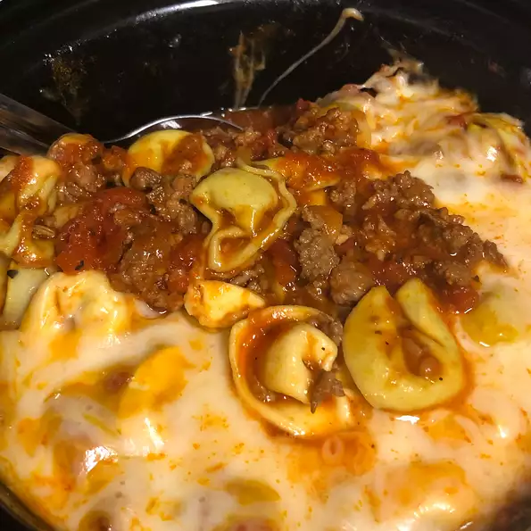

Cheesy Italian Tortellini

Description
See
recipe
Ingredients
- ½ pound Italian sausage, casings removed
- 1 (16 ounce) jar marinara sauce
- 1 (14.5 ounce) can Italian-style diced tomatoes, undrained
Steps
-
Crumble the ground beef and Italian sausage into a large skillet. Cook
over medium-high heat until browned. Drain.
-
Combine the ground meats, marinara sauce, mushrooms, and tomatoes in a
slow cooker. Cover, and cook on LOW heat for 7 to 8 hours.
Return to main page